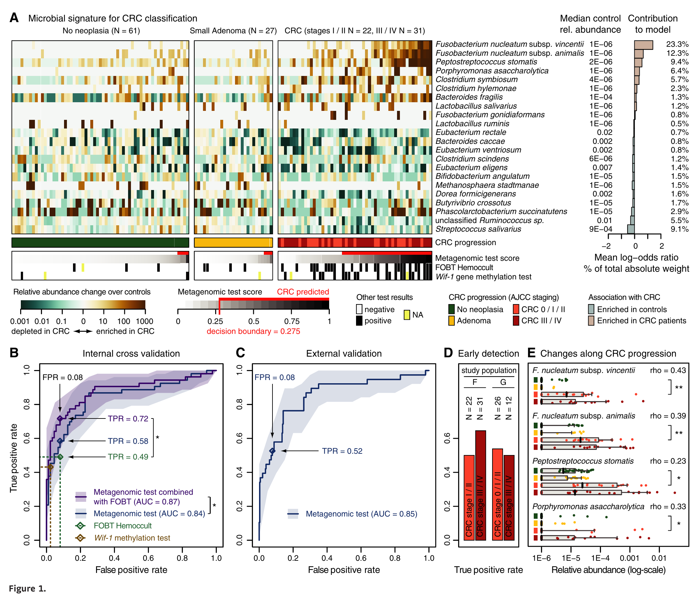
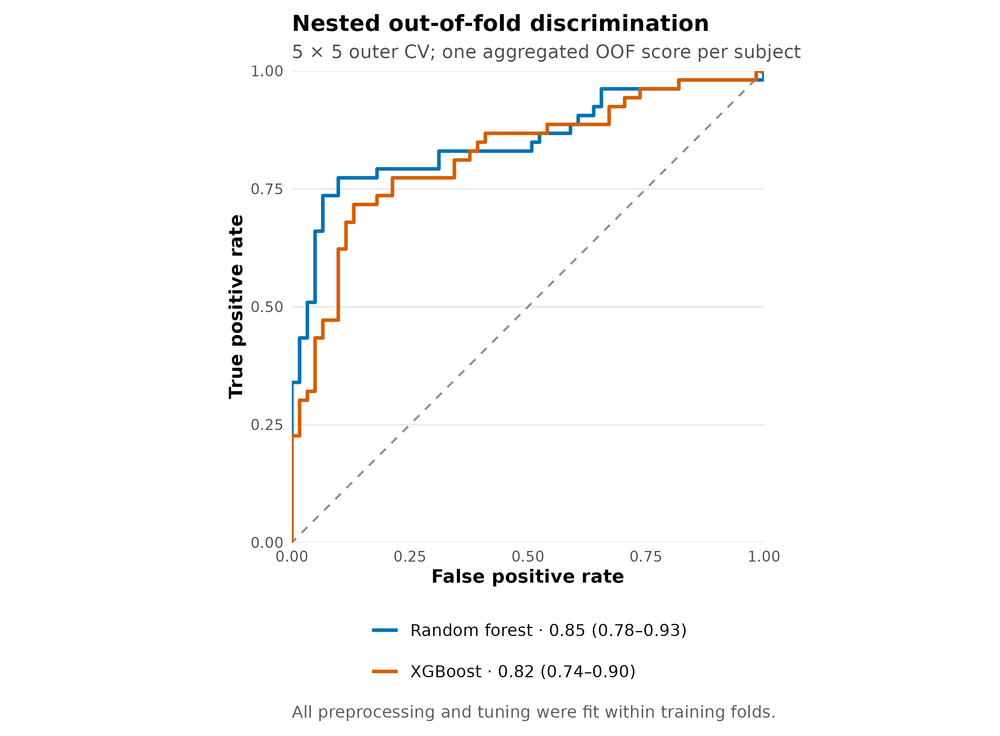
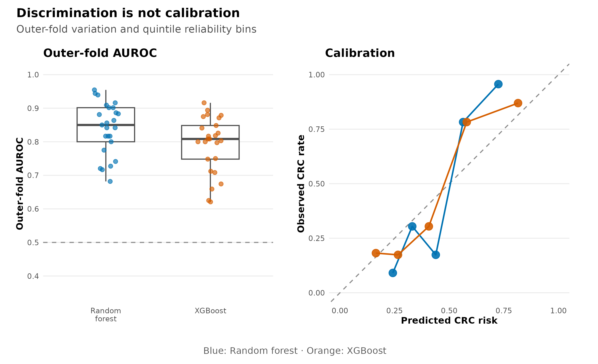
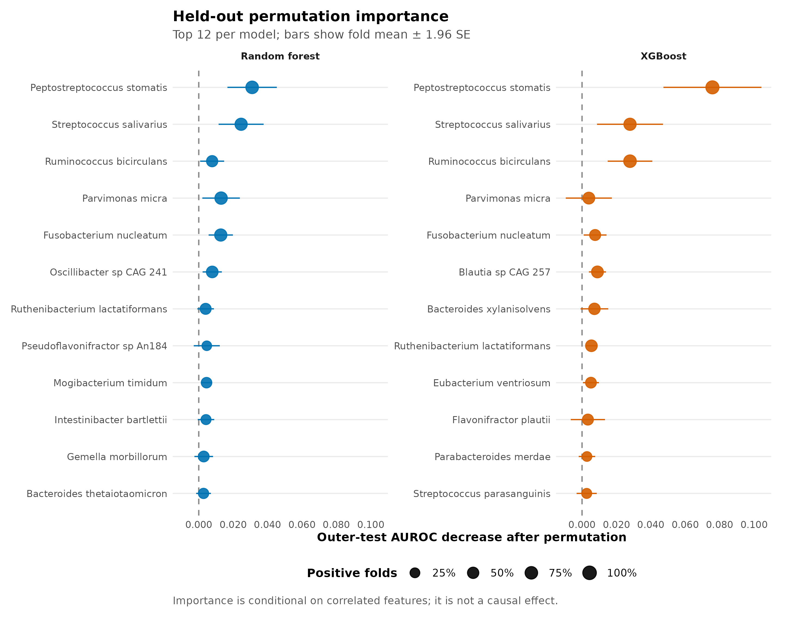
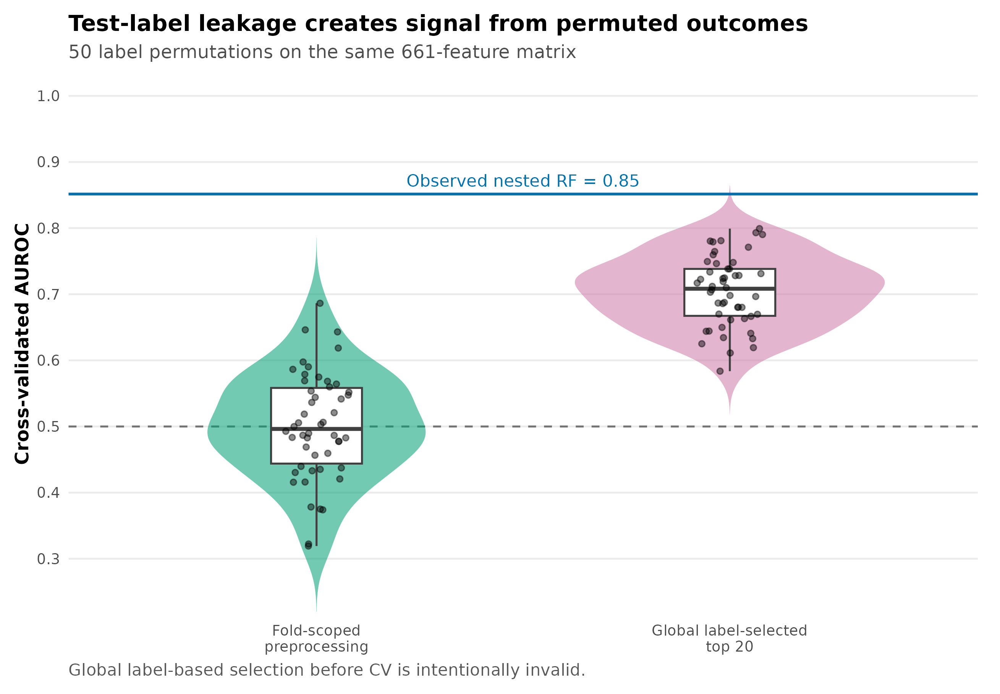

options(timeout = 600)
base_url <- "https://raw.githubusercontent.com/petemeng/metagenomics-best-practices/e219a2cd01609cc208a89e291cbd363ed7f2fbd8/"
files <- read.delim(paste0(base_url, "examples/27/files.tsv"))
for (i in seq_len(nrow(files))) {
path <- files$path[i]
dir.create(dirname(path), recursive = TRUE, showWarnings = FALSE)
if (!file.exists(path)) {
download.file(paste0(base_url, files$source[i]), path, mode = "wb")
}
}随机森林 / 梯度提升分类 + ROC + 重要性 + 防过拟合规范
学习目标：把“训练一个分类器”拆成可审核的预测任务：先锁定独立观察单位和阳性类，再把特征筛选、变换与调参全部放进训练折，最后同时报告判别、校准、模型差异和 held-out permutation importance。
真实数据：curatedMetagenomicData 3.12.0 中ZellerG_2014的统一重处理物种谱；纳入 61 名 Control 与 53 名 CRC，排除 adenoma，合计 114 名独立受试者、661 个物种特征。分类谱来自 MetaPhlAn 3 / CHOCOPhlAn 201901 (Zeller 等 2014年)。
推断边界：本章估计的是单队列、统一处理谱上的内部泛化误差。它不是独立队列验证，不是临床诊断性能，也不能证明高重要性物种具有因果作用。
下载本例数据与分析代码
数据与代码清单列出了本例的输入表、分析脚本和环境文件（约 0.8 MiB）。本清单不含原始 FASTQ 或大型数据库；是否需要它们取决于下文的分析起点。清单中的已计算结果仅供核对；读取结果表不等于重新运行统计模型或上游工具。
在新建文件夹中运行下面的 R 代码，下载完成后即可按正文中的相对路径读取文件。需要核验文件版本时，可使用带完整性检查的下载脚本。
result_dir <- "../results/27-machine-learning"
if (!dir.exists(result_dir)) result_dir <- "results/27-machine-learning"
read_tsv27 <- function(name) {
utils::read.delim(
file.path(result_dir, name), check.names = FALSE,
quote = "", comment.char = "", stringsAsFactors = FALSE
)
}
performance27 <- read_tsv27("performance-summary.tsv")
comparison27 <- read_tsv27("model-comparison.tsv")
leakage27 <- read_tsv27("leakage-permutation-summary.tsv")
preprocessing27 <- read_tsv27("preprocessing-audit.tsv")
importance27 <- read_tsv27("permutation-importance-summary.tsv")
metric27 <- function(model, column, digits = 3) {
value <- performance27[[column]][performance27$Algorithm == model]
formatC(value, format = "f", digits = digits)
}
提示先确定这一点
筛选、变换和调参都放进训练折；同时报告区分度、校准和测试折重要性，不只展示 ROC。
模型的高分，能否经得起真正的留出测试？
Zeller 等人的 Figure 1 将德国发现队列、法国验证队列和粪便宏基因组分类器放在同一张图里。历史分析使用重复嵌套验证的 LASSO 模型；论文报告德国队列内部 AUROC 约 0.84，并在法国独立队列得到约 0.85 (Zeller 等 2014年)。这张图真正值得复现的不是一条漂亮 ROC，而是“特征构建、模型选择和误差估计必须分层”的验证结构。

这里不把旧版作者谱和新版统一重处理谱混为一谈。冻结输入来自 2021-03-31 的 cMD 资源，使用 MetaPhlAn 3 / CHOCOPhlAn 201901；模型也改为两个预先指定的树集成：Random forest 与 XGBoost。因而下文是对 Figure 1 验证逻辑的当前标准复算，而不是对原论文数值或像素的逐项宣称。

本次冻结复算中，Random forest 的 AUROC 为 0.852（DeLong 95% CI 0.776–0.927），XGBoost 为 0.820（0.740–0.900）。这些区间描述当前 114 名受试者的条件判别不确定性；它们不包含换医院、换国家、换测序批次后的 domain shift。
先锁定输入、版本和算力边界
环境配置与完整运行说明
资源门槛
| Stage | CPU | RAM | Disk | Time |
|---|---|---|---|---|
| Read frozen tables and audit checksums | 1 | <1 GB | <20 MB | seconds |
| Full nested CV + held-out importance | 1 | 2–4 GB | <500 MB | about 15–30 min |
| 50-label leakage audit | 1 | 2–4 GB | <100 MB | a few minutes |
| Render from frozen results | 1 | <2 GB | about 20 MB | seconds |
num.threads = 1 与 nthread = 1 让固定种子在不同机器上更容易得到一致结果。想加速可并行 outer resamples，但必须给每个任务分配可追踪的独立 seed，并在合并后验证 fold assignments 和结果哈希。
安装固定版本
if (!requireNamespace("renv", quietly = TRUE)) {
install.packages("renv")
}
renv::restore(lockfile = "env/machine-learning-renv.lock")
# 不使用 renv 时可显式安装同一组直接依赖：
install.packages(c(
"ranger", "xgboost", "pROC",
"ggplot2", "patchwork", "scales",
"jsonlite", "digest", "knitr"
))
stopifnot(
packageVersion("ranger") == "0.16.0",
packageVersion("xgboost") == "1.7.8.1",
packageVersion("pROC") == "1.18.5"
)env/machine-learning-renv.lock 独立锁定本分析的 10 条直接与传递依赖记录（SHA-256 24436d6eabe7e2d9e50558cc0ae1c9a746c7aeeb2d6122fcfeb6a262e4955363），不改写第 12 篇已审计的全项目 185-record 快照。
生成并核验保存输入
Rscript scripts/prepare_article27_machine_learning.R \
--source-species data/small/24-differential-abundance/species-relative-abundance.tsv.gz \
--source-metadata data/small/24-differential-abundance/sample-metadata.tsv \
--output-dir data/small/27-machine-learning \
--notice data/small/27-data-NOTICE.txt
(cd data/small/27-machine-learning && \
sha256sum -c file-checksums.sha256)冻结目录保留全部 661 个物种，避免在切分前做任何 label-informed selection；analysis-contract.tsv 则固定 outcome、阳性类、fold unit、阈值、伪计数、调参指标和置换次数。原始 FASTQ 和 ExperimentHub cache 不进入 Git。
加载依赖、固定随机状态并内联作图函数
library(ranger)
library(xgboost)
library(pROC)
library(ggplot2)
library(patchwork)
library(scales)
RNGkind("Mersenne-Twister", "Inversion", "Rejection")
set.seed(20260727)
pal_pub <- c(
`Random forest` = "#0072B2",
XGBoost = "#D55E00",
`Fold-scoped preprocessing` = "#009E73",
`Global label-selected top 20` = "#CC79A7",
grey = "#7A7A7A", light = "#E8EEF3"
)
scale_color_pub <- function(...) {
ggplot2::scale_color_manual(values = pal_pub, ...)
}
scale_fill_pub <- function(...) {
ggplot2::scale_fill_manual(values = pal_pub, ...)
}
theme_pub <- function(base_size = 10) {
ggplot2::theme_minimal(base_size = base_size, base_family = "sans") +
ggplot2::theme(
panel.grid.minor = ggplot2::element_blank(),
panel.grid.major.x = ggplot2::element_blank(),
axis.title = ggplot2::element_text(face = "bold"),
legend.title = ggplot2::element_text(face = "bold"),
legend.position = "bottom",
strip.text = ggplot2::element_text(face = "bold"),
plot.title = ggplot2::element_text(face = "bold")
)
}
save_pub <- function(
plot, file_base,
width = 190, height = 130, dpi = 350
) {
ggplot2::ggsave(
paste0(file_base, ".pdf"), plot,
width = width, height = height, units = "mm",
device = grDevices::cairo_pdf, bg = "white"
)
ggplot2::ggsave(
paste0(file_base, ".png"), plot,
width = width, height = height, units = "mm",
dpi = dpi, bg = "white"
)
ggplot2::ggsave(
paste0(file_base, ".tiff"), plot,
width = width, height = height, units = "mm",
dpi = dpi, compression = "lzw", bg = "white"
)
invisible(plot)
}从物种表与样本表读起
先写清预测任务与分析单位
二分类器估计：
\[ \widehat p_i=P(Y_i=\mathrm{CRC}\mid \mathbf{x}_i), \]
其中 \(\mathbf{x}_i\) 是第 \(i\) 名受试者的物种相对丰度，阳性类固定为 CRC。样本不是天然独立：同一个人的多个时间点、同一家庭成员或技术重复不能跨到训练折和测试折两边。本数据经审计后每个 subject_id 只有一个样本，所以 fold unit 仍显式写为 subject；换成重复测量数据时，应对 subject 或 household 做 group-wise split。
adenoma 既不是健康对照，也不是已确诊 CRC。本二分类任务将其排除，而不是重标为 Control。若科学问题是筛查癌前病变，应预先另定义三分类任务或 ordinal task。
input_dir <- "../data/small/27-machine-learning"
if (!dir.exists(input_dir)) input_dir <- "data/small/27-machine-learning"
species <- utils::read.delim(
gzfile(file.path(input_dir, "species-relative-abundance.tsv.gz")),
check.names = FALSE, quote = "", comment.char = ""
)
metadata <- utils::read.delim(
file.path(input_dir, "sample-metadata.tsv"),
check.names = FALSE, quote = "", comment.char = ""
)
contract <- utils::read.delim(
file.path(input_dir, "analysis-contract.tsv"),
check.names = FALSE, quote = "", comment.char = ""
)
sample_id <- metadata$sample_id
x <- t(as.matrix(species[, sample_id, drop = FALSE]))
storage.mode(x) <- "double"
colnames(x) <- species$Species
rownames(x) <- sample_id
y <- factor(metadata$Outcome, levels = c("Control", "CRC"))
stopifnot(
identical(rownames(x), metadata$sample_id),
nrow(x) == 114L,
ncol(x) == 661L,
identical(as.integer(table(y)), c(61L, 53L)),
!anyDuplicated(metadata$subject_id),
max(abs(rowSums(x) - 1)) < 2e-6
)
knitr::kable(head(metadata[, c(
"sample_id", "subject_id", "Outcome", "study_name", "body_site"
)]))| sample_id | subject_id | Outcome | study_name | body_site |
|---|---|---|---|---|
| CCIS00146684ST-4-0 | FR-726 | Control | ZellerG_2014 | stool |
| CCIS00281083ST-3-0 | FR-060 | Control | ZellerG_2014 | stool |
| CCIS02124300ST-4-0 | FR-568 | Control | ZellerG_2014 | stool |
| CCIS02379307ST-4-0 | FR-828 | CRC | ZellerG_2014 | stool |
| CCIS02856720ST-4-0 | FR-027 | Control | ZellerG_2014 | stool |
| CCIS03473770ST-4-0 | FR-192 | Control | ZellerG_2014 | stool |
忠实保留：重复嵌套验证与独立外测
Zeller 2014 的关键设计是重复嵌套特征选择，并用另一国家的队列做外部验证 (Zeller 等 2014年)。这一结构今天仍然正确：内层回答“选哪个模型”，外层回答“在同分布新受试者上表现如何”，外部队列再回答“换研究后还能否工作”。
注意先筛差异物种，再交叉验证
这是最典型的 target leakage。哪怕下游 CV 代码写得完全正确，测试标签已通过 feature list 进入训练。差异筛选必须在每个 inner-train 中重做；若只是想解释最终模型，也不能用全数据差异结果替代 held-out importance。
只在训练折拟合 feature filter 与变换
make_stratified_folds <- function(y, k, seed) {
set.seed(seed)
fold <- integer(length(y))
for (level in levels(y)) {
index <- sample(which(y == level))
fold[index] <- rep(seq_len(k), length.out = length(index))
}
fold
}
fit_preprocessor <- function(x_train) {
keep <- colMeans(x_train > 0) >= 0.10 &
apply(x_train, 2, max) >= 1e-4
stopifnot(any(keep))
list(features = colnames(x_train)[keep], pseudocount = 1e-6)
}
apply_preprocessor <- function(object, x_new) {
out <- log10(x_new[, object$features, drop = FALSE] + object$pseudocount)
storage.mode(out) <- "double"
out
}不要在这里先写 x <- x[, prevalence(x) > 0.1]，再把 x 送进 CV。正确对象是 fit_preprocessor(x_train)，其 feature 名单原封不动应用于 x_validation 和 x_test。
把所有数据依赖步骤纳入 resampling object
本复算把 prevalence、最大丰度、log transform、超参数搜索和算法拟合全部视为 pipeline。preprocessing-audit.tsv 记录每个 outer fold 保留的 feature 数；范围为 259–277，说明 filter 确实随训练集改变，而不是偷偷使用一个全局名单。
在内层选择超参数，在外层只预测
外层估计误差，内层只负责选择
普通 \(K\) 折交叉验证若同时用于选超参数和报告性能，测试折已经参与了选择，结果会乐观。nested cross-validation（嵌套交叉验证）把两个角色分开：
\[ \underbrace{\mathcal D^{(r,k)}_{\mathrm{test}}}_{\text{outer error estimation}} \quad\perp\quad \underbrace{\operatorname*{arg\,max}_{\lambda} \widehat{\mathrm{AUROC}}_{\mathrm{inner}}(\lambda)}_{\text{model selection}}. \]
本章固定 5 次重复、每次 5 个分层外折；每个外层训练集内部再做 4 折分层调参。两个算法 × 25 个外折共拟合 50 个最终外层模型。每名受试者每个算法得到 5 个 out-of-fold（OOF）概率，最后取均值形成一个独立 subject-level score。置信区间、模型比较和校准都基于这 114 个聚合分数，不能把 570 条重复预测当成 570 个独立样本。
下面是核心循环的可运行骨架。正式复算还会保存每一折的调参表、预处理表、OOF 概率和 held-out importance，以便逐项审核。
auc_score <- function(truth, score) {
as.numeric(pROC::auc(
response = truth, predictor = score,
levels = c(FALSE, TRUE), direction = "<", quiet = TRUE
))
}
mtry_value <- function(specification, p) {
value <- switch(
specification,
sqrt = floor(sqrt(p)), fifth = floor(p / 5), third = floor(p / 3)
)
max(1L, min(p, as.integer(value)))
}
fit_model <- function(algorithm, x, y, params, seed) {
if (algorithm == "Random forest") {
ranger::ranger(
x = x, y = factor(y, levels = c("Control", "CRC")),
probability = TRUE, num.trees = 750,
mtry = mtry_value(params$mtry_spec, ncol(x)),
min.node.size = as.integer(params$min_node),
importance = "none", num.threads = 1, seed = seed
)
} else {
set.seed(seed) # R xgboost uses R's RNG; do not pass a seed parameter
xgboost::xgboost(
data = x, label = as.integer(y == "CRC"),
objective = "binary:logistic", eval_metric = "auc",
max_depth = as.integer(params$max_depth),
eta = as.numeric(params$eta),
nrounds = as.integer(params$nrounds),
min_child_weight = 1, subsample = 0.8,
colsample_bytree = 0.8, nthread = 1,
verbosity = 0, verbose = 0
)
}
}
predict_model <- function(algorithm, model, newx) {
if (algorithm == "Random forest") {
as.numeric(predict(model, data = newx)$predictions[, "CRC"])
} else {
as.numeric(predict(model, newx))
}
}
rf_grid <- expand.grid(
mtry_spec = c("sqrt", "fifth", "third"),
min_node = c(3L, 10L), stringsAsFactors = FALSE
)
xgb_grid <- expand.grid(
nrounds = c(50L, 150L), max_depth = c(1L, 2L),
eta = c(0.03, 0.10), stringsAsFactors = FALSE
)
tune_model <- function(algorithm, x, y, folds, seed) {
grid <- if (algorithm == "Random forest") rf_grid else xgb_grid
score <- numeric(nrow(grid))
for (candidate in seq_len(nrow(grid))) {
inner_oof <- rep(NA_real_, length(y))
params <- as.list(grid[candidate, , drop = FALSE])
for (fold in sort(unique(folds))) {
train <- folds != fold
validation <- !train
prep <- fit_preprocessor(x[train, , drop = FALSE])
train_x <- apply_preprocessor(prep, x[train, , drop = FALSE])
validation_x <- apply_preprocessor(prep, x[validation, , drop = FALSE])
model <- fit_model(
algorithm, train_x, y[train], params,
seed + candidate * 100L + fold
)
inner_oof[validation] <- predict_model(algorithm, model, validation_x)
}
score[candidate] <- auc_score(y == "CRC", inner_oof)
}
grid$InnerAUROC <- score
best <- which.max(score)
list(params = as.list(grid[best, , drop = FALSE]), audit = grid)
}
outer_predictions <- list()
row_out <- 0L
for (repeat_id in 1:5) {
outer_fold <- make_stratified_folds(y, 5, 20260727 + repeat_id * 1000L)
for (fold_id in 1:5) {
outer_train <- outer_fold != fold_id
outer_test <- !outer_train
inner_fold <- make_stratified_folds(
droplevels(y[outer_train]), 4,
20260727 + repeat_id * 10000L + fold_id * 100L
)
for (algorithm_index in 1:2) {
algorithm <- c("Random forest", "XGBoost")[[algorithm_index]]
seed_base <- 20260727 + algorithm_index * 1000000L +
repeat_id * 10000L + fold_id * 100L
tuned <- tune_model(
algorithm, x[outer_train, , drop = FALSE],
y[outer_train], inner_fold, seed_base
)
prep <- fit_preprocessor(x[outer_train, , drop = FALSE])
train_x <- apply_preprocessor(prep, x[outer_train, , drop = FALSE])
test_x <- apply_preprocessor(prep, x[outer_test, , drop = FALSE])
model <- fit_model(
algorithm, train_x, y[outer_train],
tuned$params, seed_base + 999L
)
row_out <- row_out + 1L
outer_predictions[[row_out]] <- data.frame(
SampleID = rownames(x)[outer_test],
SubjectID = metadata$subject_id[outer_test],
Outcome = as.character(y[outer_test]),
Repeat = repeat_id, OuterFold = fold_id,
Algorithm = algorithm,
ProbabilityCRC = predict_model(algorithm, model, test_x)
)
}
}
}
outer_predictions <- do.call(rbind, outer_predictions)完整网格、seed 派生规则、2000 次 paired bootstrap、测试折逐特征置换和 50 次泄漏审计由同一个验证命令执行：
R_LIBS_USER="$PWD/.r-lib:$HOME/R/library" \
Rscript scripts/validate_article27_machine_learning.R \
--project-root "$PWD" \
--input-dir "$PWD/data/small/27-machine-learning" \
--output-dir "$PWD/results/27-machine-learning" \
--figure-dir "$PWD/figures" \
--chapter "$PWD/chapters/27-machine-learning-roc.qmd"
注意把五次 OOF 概率当成五名受试者
重复 CV 产生的是同一 subject 的相关预测。把 570 条记录直接送进 DeLong CI 或普通 bootstrap 会伪造样本量。本章先按 subject 聚合，再重采样 114 个 subject；fold-level variability 另图展示。
注意用训练集 ROC 或 OOB 分数替代外层测试
训练 AUROC 衡量拟合，不能估计新样本性能。Random forest 的 OOB prediction 可用于某些内部选择，但当 preprocessing 和算法比较也要调节时，仍需统一的 untouched outer folds。
注意看完 ROC 再挑 cutoff
在同一 OOF 数据上最大化 Youden index，再把对应 sensitivity/specificity 当作确认性结果，会引入二次选择偏差。阈值应由临床代价或 inner-training data 预先选择，并在外部队列固定评估。本章只报告未调优的 0.5 阈值作为审计量。
同时读取五类性能证据
Random forest 与 XGBoost 回答的是同一问题
Random forest 对 bootstrap 样本生长许多去相关树，再平均类别概率；关键复杂度参数是每次分裂候选变量数 mtry 和叶节点最小样本数。ranger 提供适合高维数据的实现 (Wright 和 Ziegler 2017年)。
XGBoost 顺序添加弱树以拟合当前损失的梯度；本章调节树深、学习率和迭代轮数，并固定 row/column subsampling。它更容易用交互和非线性换取训练拟合度，也更需要把选择锁在内层 (Chen 和 Guestrin 2016年)。
两种模型都在看到结果前预先指定，且无论胜负都报告。若尝试 30 种算法后只展示最好的一种，算法本身就成了未嵌套的超参数。
AUROC、AUPRC 与 Brier 各看一面
AUROC 可写为随机抽取一名 CRC 和一名 Control 时，模型给前者更高分的概率：
\[ \mathrm{AUROC}=P(\widehat p_{\mathrm{CRC}}>\widehat p_{\mathrm{Control}}). \]
它不依赖某一个 cutoff，但也不直接回答阳性预测值。AUPRC 在这里以 average precision 计算，聚焦 precision–recall 权衡；其无信息基线等于阳性比例，本数据为 \(53/114=0.465\)。Brier score 衡量概率误差：
\[ \mathrm{Brier}=\frac{1}{n}\sum_{i=1}^{n}(y_i-\widehat p_i)^2, \]
越低越好。一个排序正确却把所有概率压在 0.45–0.55 的模型，可以有不错 AUROC，但概率并不适合临床决策。因此同时给 ROC、AUPRC、Brier、固定 0.5 阈值的 sensitivity/specificity 和 reliability bins (Robin 等 2011年)。
display_performance <- performance27[, c(
"Algorithm", "AUROC", "AUROCLower95", "AUROCUpper95",
"AUPRC", "Brier", "SensitivityAt0.5", "SpecificityAt0.5"
)]
names(display_performance) <- c(
"Model", "AUROC", "AUROC 2.5%", "AUROC 97.5%",
"AUPRC", "Brier", "Sensitivity at 0.5", "Specificity at 0.5"
)
knitr::kable(display_performance, digits = 3)| Model | AUROC | AUROC 2.5% | AUROC 97.5% | AUPRC | Brier | Sensitivity at 0.5 | Specificity at 0.5 |
|---|---|---|---|---|---|---|---|
| Random forest | 0.852 | 0.776 | 0.927 | 0.873 | 0.171 | 0.736 | 0.902 |
| XGBoost | 0.820 | 0.740 | 0.900 | 0.824 | 0.172 | 0.679 | 0.869 |
Random forest 的 AUPRC 为 0.873、Brier 为 0.171；XGBoost 分别为 0.824 和 0.172。paired subject bootstrap 给出的 AUROC 差（RF − XGBoost）为 0.031，95% 区间为 -0.001–0.065。模型排名若改变，并不会推翻流水线；它只说明当前数据不足以支持“某算法普遍更优”的结论。

不只展示最佳 AUROC
SIAMCAT 的跨疾病、跨研究基准指出，队列结构和研究特异信号可显著影响 microbiome classifier；单次 split 或单一指标很容易给出过度乐观叙事 (Wirbel 等 2021年)。因此这里同时展示：
- 25 个 outer-fold AUROC 的完整分布；
- 聚合 subject score 的 AUROC 与 DeLong CI；
- AUPRC 和 Brier；
- 固定阈值 sensitivity/specificity；
- reliability bins；
- 两算法的 paired subject bootstrap 差异。
在外层测试折做 permutation importance
top_importance <- importance27[
importance27$Rank <= 6,
c("Algorithm", "Species", "MeanDeltaAUROC", "Lower95", "Upper95", "PositiveFoldFraction")
]
knitr::kable(top_importance, digits = 3)| Algorithm | Species | MeanDeltaAUROC | Lower95 | Upper95 | PositiveFoldFraction | |
|---|---|---|---|---|---|---|
| 1 | Random forest | Peptostreptococcus stomatis | 0.031 | 0.017 | 0.045 | 0.76 |
| 2 | Random forest | Streptococcus salivarius | 0.025 | 0.012 | 0.038 | 0.68 |
| 3 | Random forest | Parvimonas micra | 0.013 | 0.002 | 0.024 | 0.72 |
| 4 | Random forest | Fusobacterium nucleatum | 0.013 | 0.006 | 0.020 | 0.68 |
| 5 | Random forest | Oscillibacter sp CAG 241 | 0.008 | 0.002 | 0.013 | 0.56 |
| 6 | Random forest | Ruminococcus bicirculans | 0.008 | 0.001 | 0.015 | 0.48 |
| 290 | XGBoost | Peptostreptococcus stomatis | 0.076 | 0.047 | 0.104 | 0.88 |
| 291 | XGBoost | Streptococcus salivarius | 0.028 | 0.009 | 0.047 | 0.68 |
| 292 | XGBoost | Ruminococcus bicirculans | 0.028 | 0.015 | 0.041 | 0.76 |
| 293 | XGBoost | Blautia sp CAG 257 | 0.009 | 0.004 | 0.014 | 0.60 |
| 294 | XGBoost | Fusobacterium nucleatum | 0.008 | 0.001 | 0.014 | 0.44 |
| 295 | XGBoost | Bacteroides xylanisolvens | 0.007 | -0.001 | 0.015 | 0.52 |
每个物种只在它出现于相应 outer-train feature set 时才有可用折；因此结果表同时保存 OuterFoldsAvailable。正式候选 biomarker 至少还应检查跨重复的 rank stability、相关 feature clusters、混杂校正和独立队列方向一致性。

把泄漏变成可证伪的负对照
“我们没有泄漏”不能只靠流程图。标签置换建立了明确 null：正确流水线应回到 chance；如果置换后仍持续高分，就应检查 feature selection、normalization、batch correction、重复受试者和样本主键。这个负对照不能证明所有泄漏都不存在，但能抓住最常见的 label-informed preprocessing 错误。
注意高 importance 被写成致病菌
permutation importance 衡量对当前模型预测的贡献，受共线性、队列结构和 profiler feature universe 影响。它既不是 differential abundance effect，也不是干预效应；需要关联模型、机制实验和跨队列验证分别补证据。
用置换标签专门攻击泄漏
“预处理没看标签”仍可能 data leakage
data leakage（数据泄漏）是任何测试折信息进入拟合过程的情形，不只包括把 Outcome 明着放进特征。下面这些操作都属于模型的一部分：
- 根据全数据 prevalence 或最大丰度筛物种；
- 用全数据均值、方差或分位数做标准化；
- 在全数据上挑差异最显著的 top features；
- 看完测试折表现后选择模型、阈值或超参数；
- 先做全队列批次校正，再切分训练与测试。
本章在每个 inner-train 和 outer-train 内重新拟合两条无标签阈值：非零 prevalence ≥10%，且最大相对丰度 ≥\(10^{-4}\)；随后加固定伪计数 \(10^{-6}\) 并作 \(\log_{10}\) 变换。即便 prevalence filter 不读取 \(Y\)，若先用全体样本计算，它仍让测试折决定了 feature universe。
重要性不是效应量，更不是因果证据
impurity importance 会偏向可切分点多或高频的变量，也是在训练数据上计算。本章对每个 outer-test fold 逐物种置换，记录：
\[ \Delta_j=\mathrm{AUROC}_{\mathrm{baseline}}- \mathrm{AUROC}_{\mathrm{permute}(j)}. \]
正值表示破坏该物种后 held-out discrimination 下降。若两个物种高度相关，置换其中一个可能由另一个补偿；负值也可能来自测试折很小和抽样波动。因此图上同时展示跨折均值、近似误差条和正值折比例，不把 rank 当作稳定 biomarker 清单。
安全分支在每个训练折拟合 prevalence/abundance filters。故意无效的分支先使用全体置换标签挑选相关性最大的 20 个物种，再做 5 折 CV；测试标签已经参与特征选择。两条分支使用同一个真实 661-feature matrix，各运行 50 次 subject-label permutations。
knitr::kable(
leakage27[, c(
"Pipeline", "Permutations", "MedianAUROC", "Lower95", "Upper95",
"LabelInformationFromTestFold"
)],
digits = 3
)| Pipeline | Permutations | MedianAUROC | Lower95 | Upper95 | LabelInformationFromTestFold |
|---|---|---|---|---|---|
| Fold-scoped preprocessing | 50 | 0.496 | 0.334 | 0.645 | FALSE |
| Global label-selected top 20 | 50 | 0.708 | 0.613 | 0.792 | TRUE |
安全分支的 null median AUROC 为 0.496；全局 label-selected 分支升至 0.708。这里的高分没有任何生物信号：标签已经被随机打乱，剩下的只有 data leakage。

尚未解决：external validity 与临床效用
内部 nested CV 无法模拟 country、center、DNA extraction、sequencer、profiler database 或 case-mix 的变化。下一层证据应锁定模型后，在完全独立队列只运行一次；若有多个队列，再做 leave-one-dataset-out。真正的筛查研究还需与年龄、性别、FIT/FOBT 等临床基线比较，并报告 decision curve、预先指定阈值和前瞻性校准，而不只是 AUROC。
警告AUROC 很高，却不能部署
病例对照研究的 prevalence、采样场景和真实筛查人群不同；AUROC 对 class prevalence 不敏感，但 PPV、NPV 和 calibration 会改变。部署前必须在目标人群重新校准并做前瞻性效用评估。
说明嵌套验证、校准和不确定性
Species-level relative-abundance profiles were obtained from the 2021-03-31
ZellerG_2014resource in curatedMetagenomicData v3.12.0 (MetaPhlAn 3; CHOCOPhlAn 201901). The binary analysis included 114 independent stool samples (61 controls and 53 colorectal cancer cases); adenoma samples were excluded. Random-forest probability models (ranger v0.16.0) and gradient-boosted trees (XGBoost v1.7.8.1) were prespecified. Performance was estimated using five repeats of stratified five-fold nested cross-validation, with four inner folds for hyperparameter selection. The split unit was the subject. Within every training fold, species were retained at nonzero prevalence ≥10% and maximum relative abundance ≥0.01%, followed by a \(\log_{10}(x+10^{-6})\) transformation; the fitted feature set was applied unchanged to validation and test folds. Each subject’s five outer-fold probabilities were averaged. Discrimination was summarized by AUROC with DeLong 95% confidence intervals (pROC v1.18.5) and AUPRC calculated as average precision; probability accuracy was summarized by the Brier score and five equal-frequency calibration bins. Model AUROCs were compared using 2,000 paired subject-level bootstrap replicates. Feature importance was defined as the decrease in outer-test AUROC after within-fold feature permutation. A negative-control audit compared fold-scoped preprocessing with deliberately invalid global label-based feature selection across 50 subject-label permutations. All stochastic operations used seed 20260727; tree fitting used one thread. Analyses were conducted in R v4.4.1.
Methods 里还应写明 cohort accession、原始读段处理、排除规则、阳性类、fold stratification、grouping variable、全部调参网格和缺失值策略。若阈值、模型或特征是在看过外层结果后改变的，应把新结果标为 exploratory，并重新建立独立测试集。
换到自己的研究中，先检查哪些条件？
至少准备两张表：
features × samples的 abundance matrix，feature 名唯一、样本列可与 metadata 精确对齐，并记录 profiler、database、单位和零值含义；- 每个样本一行的 metadata，至少含
sample_id、outcome、subject_id，以及 center、batch、time point、household、年龄、性别等潜在 grouping/confounders。
然后依次回答：
- 预测场景是什么？诊断现患病、筛查未来发病，还是区分亚型？时间方向决定 split 方法。
- 独立单位是什么？若一人多样本，按 subject 分折；多中心模型可按 center 做外层 group CV，并保留一个完全外部中心。
- 哪些步骤依赖数据？imputation、normalization、batch correction、feature selection、dimension reduction 和 calibration 都应纳入训练折。
- 基线模型是什么？至少与 prevalence-only、临床变量模型及简单正则化线性模型比较，避免只证明复杂模型胜过 chance。
- class imbalance 多严重？不要只看 accuracy；报告 AUPRC、sensitivity、specificity、PPV/NPV 与目标 prevalence 下的 calibration。
- 何时锁模？完成内部 nested CV 后冻结 feature mapping、预处理、超参数和 cutoff；外部测试只运行一次。
如果样本来自多个研究，不要把 study 当普通协变量后随机混合分折。随机 CV 可能主要学习 study-specific signatures；更合适的是 leave-one-study-out、按队列分层的 external validation，或在部署队列上预注册前瞻性测试 (Wirbel 等 2021年)。
图中应该保留哪些信息？
四张复算图采用同一视觉语法：Random forest 固定蓝色，XGBoost 固定橙色；安全 pipeline 用绿色，故意泄漏的 pipeline 用洋红色。图内文字全部为英文，避免字体缺失并可直接进入英文稿件。
ROC 图必须保留 \((0,0)\)、\((1,1)\) 和 chance diagonal，坐标等比例；图例同时写模型、AUROC 与 CI。outer-fold 图展示全部点而非只有均值。importance 图以零线区分“破坏后下降”和“置换后反而改善”，并在 caption 里明确它不是因果效应。泄漏图保留每次 permutation，而不是只给两个箱线图。
roc <- utils::read.delim("results/27-machine-learning/roc-curves.tsv")
perf <- utils::read.delim("results/27-machine-learning/performance-summary.tsv")
perf$Legend <- sprintf(
"%s · %.2f (%.2f–%.2f)",
perf$Algorithm, perf$AUROC, perf$AUROCLower95, perf$AUROCUpper95
)
roc$Legend <- perf$Legend[match(roc$Model, perf$Algorithm)]
p <- ggplot(roc, aes(FPR, TPR, color = Legend)) +
geom_abline(slope = 1, intercept = 0, linetype = 2, color = "grey55") +
geom_step(linewidth = 0.9) +
coord_equal(xlim = c(0, 1), ylim = c(0, 1), expand = FALSE) +
scale_x_continuous(
breaks = seq(0, 1, 0.25),
labels = function(x) sprintf("%.2f", x)
) +
scale_y_continuous(
breaks = seq(0, 1, 0.25),
labels = function(x) sprintf("%.2f", x)
) +
scale_color_manual(
values = c("#0072B2", "#D55E00"),
guide = guide_legend(nrow = 2, byrow = TRUE)
) +
labs(
x = "False positive rate", y = "True positive rate",
color = NULL, title = "Nested out-of-fold discrimination",
subtitle = "5 × 5 outer CV; one aggregated OOF score per subject",
caption = "All preprocessing and tuning were fit within training folds."
) +
theme_pub()
save_pub(p, "figures/27-nested-roc", width = 190, height = 140)PDF 作为矢量主文件，PNG 服务网页和公众号，350-dpi LZW TIFF 用于期刊投稿；不得把低分辨率网页截图放大后冒充 300 dpi。
回到最初的问题
同一张物种丰度表，既能得到可信的内部验证，也能因一次全局特征筛选制造出虚假的高分。本文用 ZellerG_2014 的 114 名独立受试者和 661 个真实物种特征，对随机森林与 XGBoost 做 5×5 外层、4 折内层的嵌套交叉验证，并用 50 次标签置换把 data leakage 的后果直接画出来。
参考文献
- Zeller G, Tap J, Voigt AY, et al. Potential of fecal microbiota for early-stage detection of colorectal cancer. Molecular Systems Biology. 2014;10:766. (Zeller 等 2014年)
- Wirbel J, Zych K, Essex M, et al. Microbiome meta-analysis and cross-disease comparison enabled by the SIAMCAT machine learning toolbox. Genome Biology. 2021;22:93. (Wirbel 等 2021年)
- Wright MN, Ziegler A. ranger: A fast implementation of random forests for high dimensional data in C++ and R. Journal of Statistical Software. 2017;77(1):1–17. (Wright 和 Ziegler 2017年)
- Chen T, Guestrin C. XGBoost: A scalable tree boosting system. Proceedings of KDD. 2016:785–794. (Chen 和 Guestrin 2016年)
- Robin X, Turck N, Hainard A, et al. pROC: an open-source package for R and S+ to analyze and compare ROC curves. BMC Bioinformatics. 2011;12:77. (Robin 等 2011年)
数据与图件来源：cMD 资源 2021-03-31.ZellerG_2014.relative_abundance；冻结输入的 SHA-256 清单见 data/small/27-machine-learning/file-checksums.sha256，数据说明见 data/small/27-data-NOTICE.txt，逐折输出与验证清单见 results/27-machine-learning/。